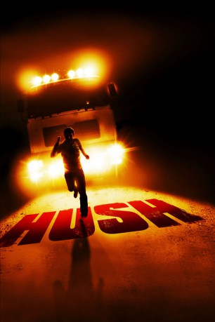

#7744 Hush
 
 IMDB-Wertung: 6.0 / 10
IMDB-Wertung: 6.0 / 10  Metascore: 0
Metascore: 0 
Zakes ist ein eher erfolgloser Autor mit einer tückischen Schreibblockade. Um sich über Wasser zu halten, hat er einen Job angenommen, bei dem er in Autobahnraststätten Plakate aufhängen muss. Auf seiner aktuellen Tour hat sich seine langjährige Freundin Beth dafür entschieden, ihn zu begleiten. Ihre Beziehung kriselt nämlich schon lange, und auf dieser Fahrt will Beth entscheiden, ob sie überhaupt noch eine Zukunft hat. Zakes hat allerdings ganz andere Sachen im Kopf und ist deshalb auch völlig überrumpelt, als er von einem grösseren Lastwagen überholt wird und - nachdem sich die Hinterklappe kurz geöffnet hat - in dessen Innenraum etwas Unglaubliches entdeckt.
Jahr: 2008
Dauer: 91 Minuten
FSK:
Land: England Studio: Ascot Elite Home EntertainmentTonspuren: DTS - ,
Untertitel: Deutsch,
Auflösung: 1080p (1920x816) Größe: 10752 MB
Genre: Thriller, Horror
Regisseur: Mark Tonderai
Drehbuch: Mark Tonderai
Soundtrack: Theo Green
Darsteller:
- William Ash als Zakes Abbot
- Christine Bottomley als Beth
 Andreas Wisniewski als The Tarman
Andreas Wisniewski als The Tarman- Claire Keelan als Wendy
 Stuart McQuarrie als Thorpe
Stuart McQuarrie als Thorpe Robbie Gee als Chimponda
Robbie Gee als Chimponda Shaun Dingwall als PC Mitchall
Shaun Dingwall als PC Mitchall- Allison Saxton als Woman in Loo
- Annie Vanders als Carjack victim (uncredited)
- Peter Wyatt als Mr. Coates
- Sheila Reid als Mrs. Coates
- Rupert Procter als Dad
- Carol Allen als Mum
- Harry Mondryk als Dash
- Tobias Adams-Heighway als Drummer Boy
- Dasiy Mondryk als Girl
- Janet Greenwood als Cleaner
- Sade Stewart als Shop Assistant
- Clive Cope als Policeman #1 (uncredited)
- Allan Gentleman als Policeman #2 (uncredited)
- Jayne Lutwyche als Kidnapped woman in truck (uncredited)
Datei: X:\2008(G-M)\Hush (2008, FSK, 1920x816).mkv seit 15.12.2017
Festplatte: HD 2008(G-Z)-2009(A-F)
 Es gibt insgesamt 73 Filme in der Gruppe '2008(G-M)'
Es gibt insgesamt 73 Filme in der Gruppe '2008(G-M)'